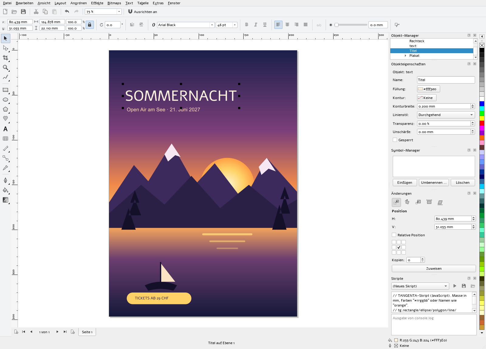
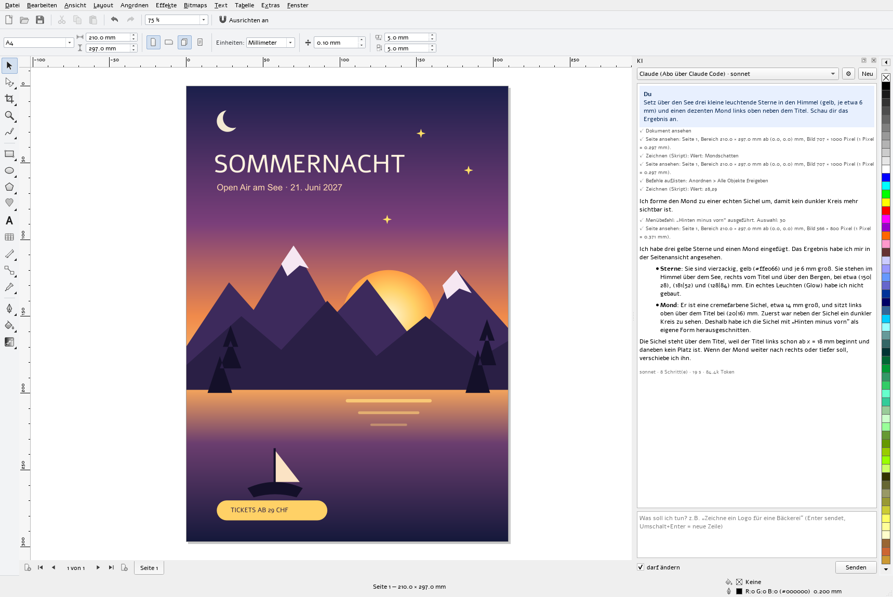
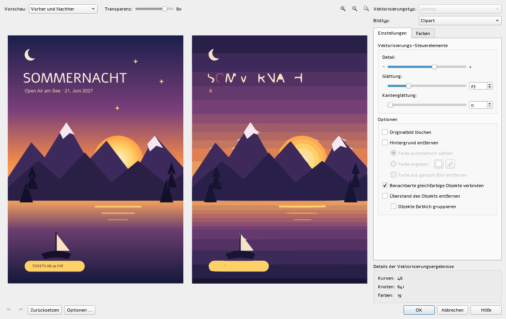
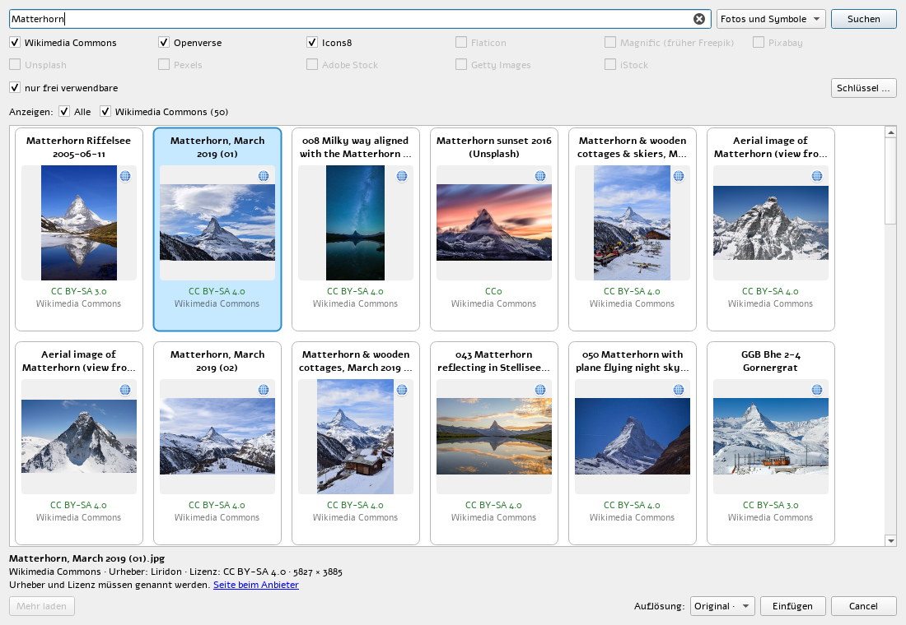
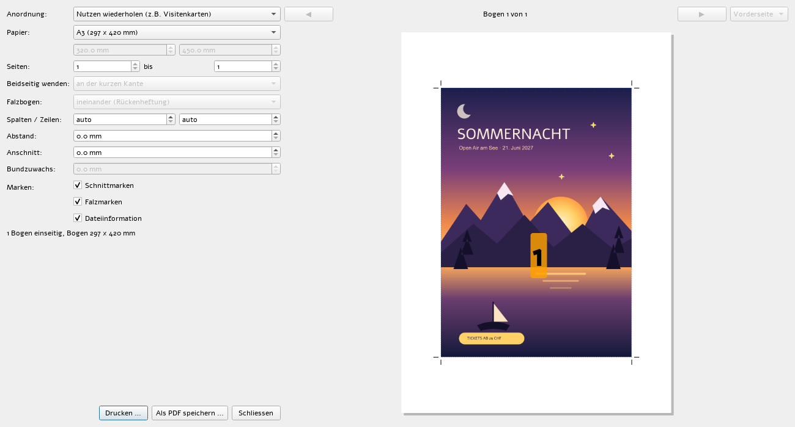

Draw
Rectangle, ellipse and arc, polygon and star, spiral, freehand, Bézier, artistic media, perfect shapes, tables, dimensions, connectors.
Free vector graphics for Windows and Linux
TANGENTA brings the tools you know as free software. Plus an AI assistant that does more than talk: it draws.
Windows 10 / 11 · Debian 12 / 13 · Ubuntu 24.04 / 26.04
No licence fee. No subscription. GPLv3.

01 / Familiar
Menus, shortcuts, dockers and tools are where years of classic vector graphics taught you to look. Nothing to relearn, no week of training.
Measurements in mm, number fields that calculate (297/2), snapping to nodes, guidelines and the page.
A native program in C++ and Qt 6. It starts in seconds and responds instantly, even with large documents.
PDF, SVG, EPS, DXF and all common image formats in and out. Scripts in JavaScript.
02 / AI assistant
The assistant works right inside your document. In the picture it was given a single sentence: “Put three small glowing stars in the sky and a subtle moon at the top left next to the title.” It looked at the poster, drew, and checked its own result.

03 / Tools
Rectangle, ellipse and arc, polygon and star, spiral, freehand, Bézier, artistic media, perfect shapes, tables, dimensions, connectors.
Every kind of node, knife, eraser, weld, intersect, trim.
Gradient, pattern, texture, mesh fill and the interactive fill right on the object.
Blend, contour, extrude, envelope, perspective, drop shadow, lens, bevel, SuperClip.
Artistic and paragraph text, linked frames, text on path, hyphenation, spell checking.
Up to camera RAW (NEF, CR3, DNG …), tone curve, colour balance, filters.
Pages with a master page, layers, symbols and clones, unlimited undo, print preview and imposition for booklets and step-and-repeat.
JavaScript scripts with an editor – or simply ask the AI assistant.
See all features →04 / SuperTrace
Trace logos, line art, clip art and photos. Before and after side by side. Adjust detail, smoothing, colours and background live; Quick Trace does it all in one click.

05 / Image search
Wikimedia Commons, Openverse and Icons8 without a key; plus Flaticon, Magnific, Pixabay, Unsplash and Pexels with your own account. Licence on every tile, resolution up to the original, credit in the object name.

06 / Print
Imposition for booklets, signatures and step-and-repeat, with crop and fold marks, bleed and a preview of every sheet. As PDF with presets for print shops and the web, or straight to the printer.

07 / Free
Install TANGENTA on as many computers as you like. At work and in the classroom, too.
No account, no cloud requirement. Your drawings stay with you, and open formats keep them readable.
GPLv3 on GitHub. Every feature has an automated test, and contributions are welcome.
08 / Who it is for
Posters, flyers, logos and signs with the tools you have used for years.
Silent installation via GPO or Intune, with no licence server and no counting seats.
Free software for every school computer and for home, with no licensing questions.
Invitations, labels and club logos, free of charge and without a subscription.
09 / Download
Setup with a wizard, or an MSI for network deployment. Both install silently.
Download setupTANGENTA-0.85-x64-setup.exe /quiet
msiexec /i TANGENTA-0.85-x64.msi /qnPackages for Debian 12, Debian 13, Ubuntu 24.04 and 26.04, with their own Qt 6.10.
Download .debsudo apt install ./tangenta_0.85-1~debian12_amd64.deb10 / Questions
Not yet: the program interface is currently in German. Spell checking already covers English, French and German. Translations of the interface are welcome on GitHub.
Not directly yet. Save as PDF, SVG or EPS; TANGENTA imports these formats as editable curves.
Nothing from TANGENTA. With a Claude subscription (Pro or Max) and Claude Code installed, it runs on your subscription at no extra cost. Alternatively, use your own API key (Claude, OpenAI, Gemini, DeepSeek) or your own Ollama server.
No. Without the “darf ändern” (may change) tick, it only reads. And whatever it changes in one answer, a single Ctrl+Z undoes.
Today it runs on Windows and Linux. Qt makes a Mac version possible; it is on the wish list.
Yes, without restriction. The GPLv3 only governs distributing modified versions, not using the program.
Free of charge, for Windows and Linux, with AI.